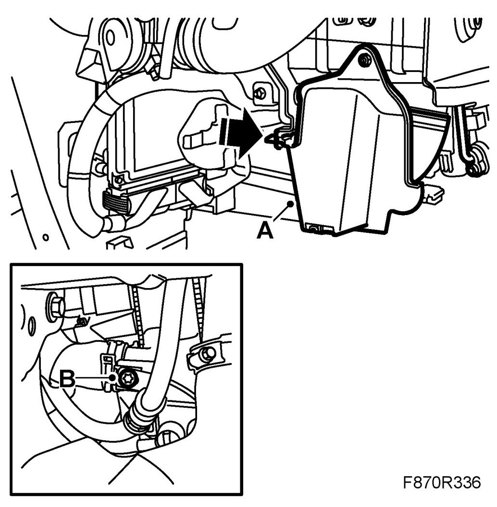
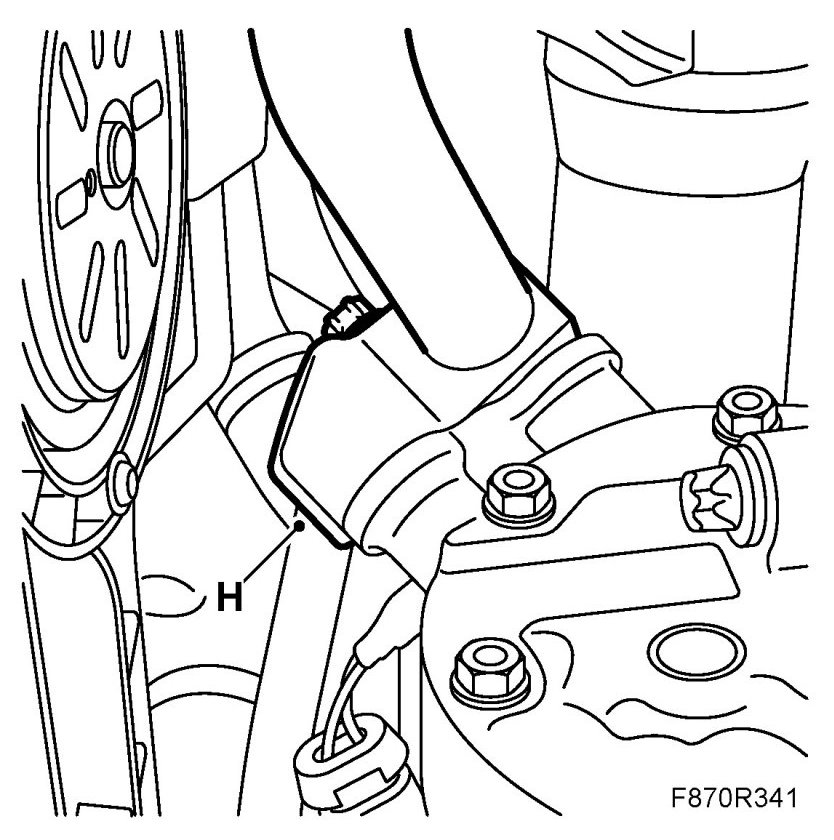
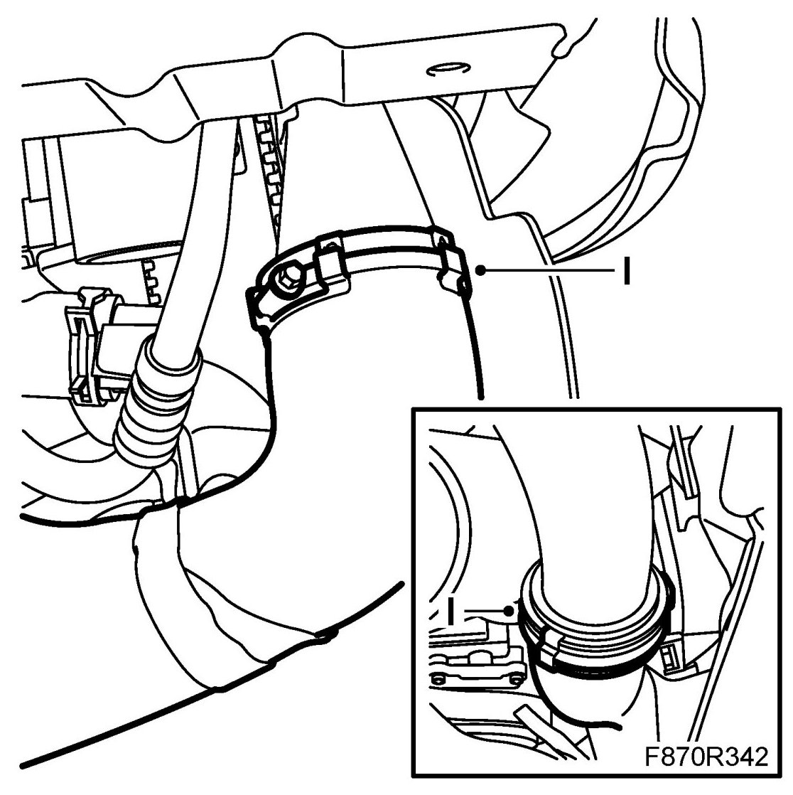
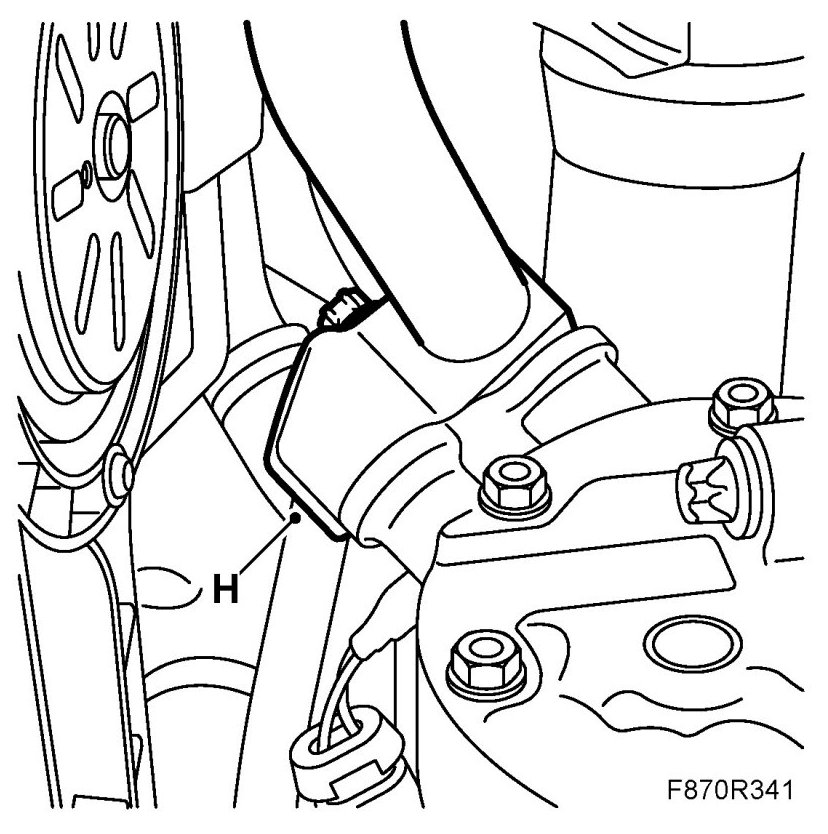
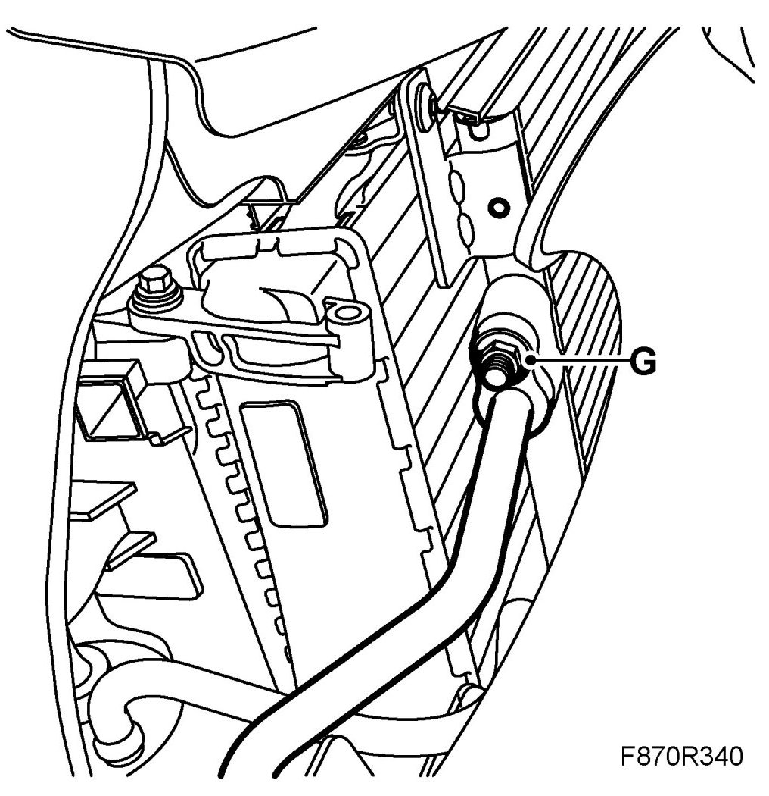
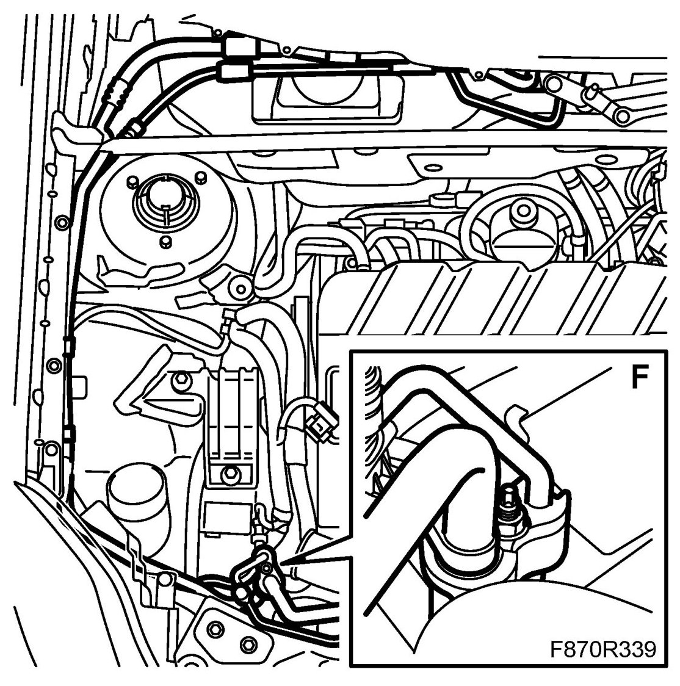
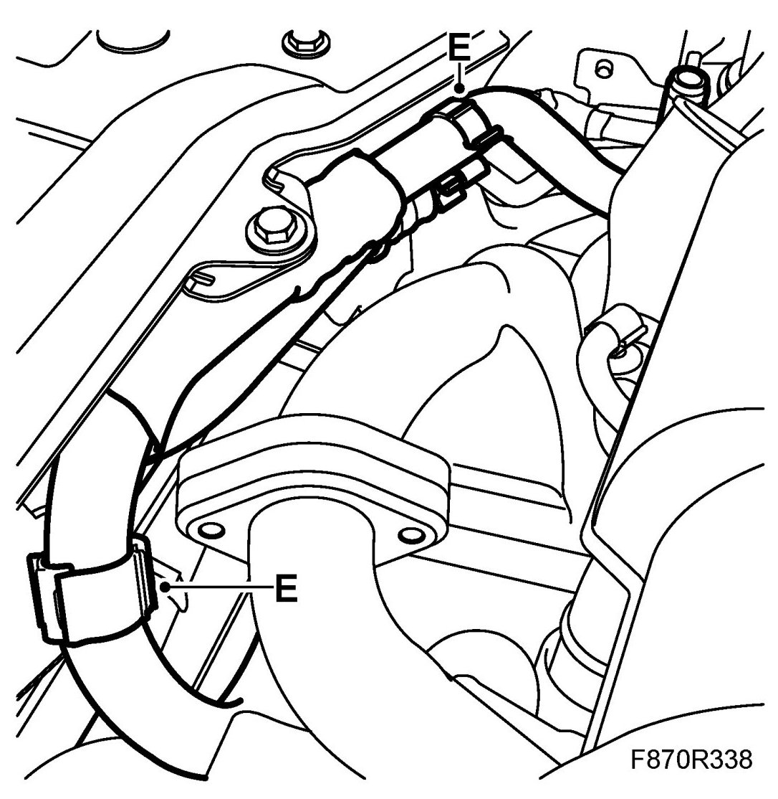
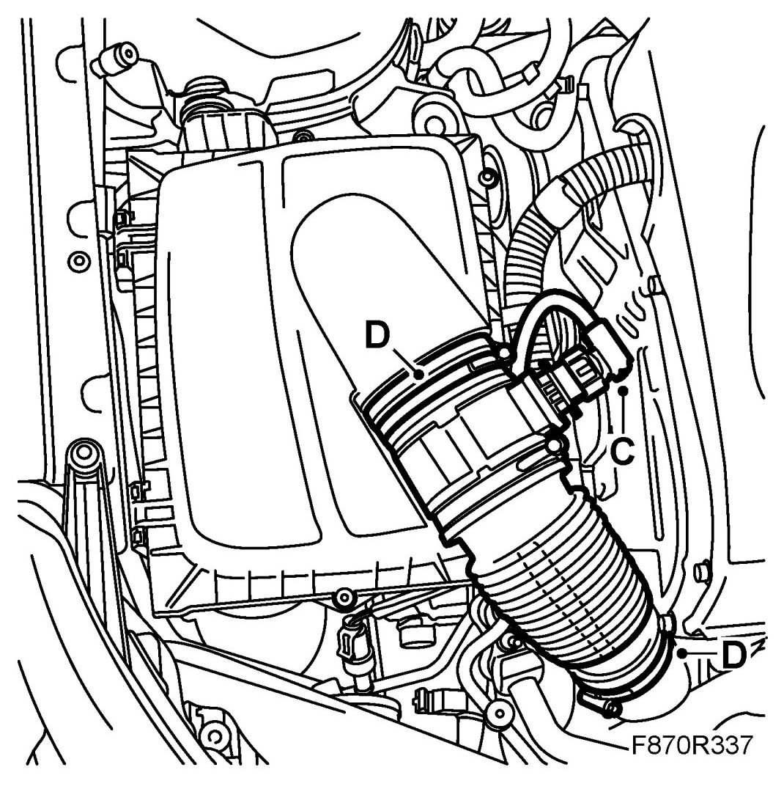
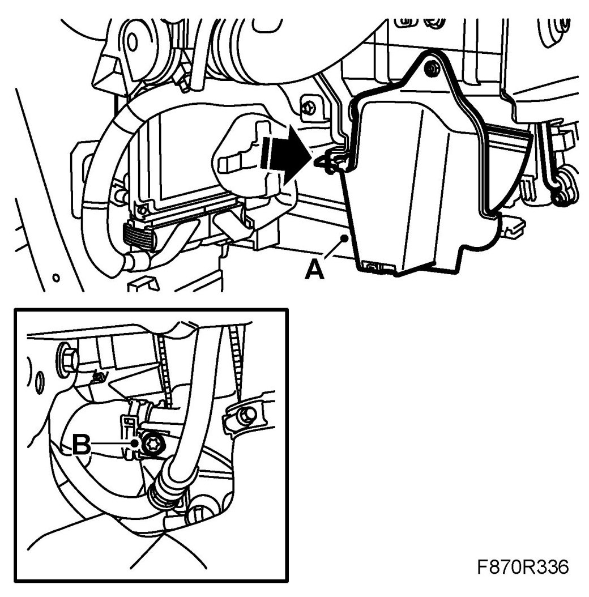

Compressor's High and Low-Pressure Pipes, Z19DTR
Compressor's High And Low-pressure Pipes, Z19DTR
IMPORTANT: The A/C receiver and the compressor oil absorb moisture from the air, which can then not be removed. Plug all connections that are opened immediately.
To remove
1. Drain the refrigerant from the A/C system.
2. Put the car on a lift.
3. Remove the front bumper shell.
4. Remove the right headlamp.
5. Remove the nut for the right-hand cover and loosen the cover (A).

6. Remove the screw (B) for the pipe to the upper PAD connection for the condenser.
7. Unplug the mass air flow sensor connector (C).
8. Remove the hose (D) between the turbo intake manifold and air cleaner housing.
9. Remove the clips (E) from the hose.
10. Detach the PAD connection (F) from the right-hand front structural member. Lift up the pipe. Plug the openings.
11. Detach the upper PAD connection (G) from the condenser. Plug the opening.
12. Raise the car.
13. Remove the lower engine cover.
14. Detach the high and low pressure pipes' PAD connection (H) from the AC compressor. Plug the openings.

15. Loosen the rubber hose's hose clamps (I) and remove it.

16. Remove the high and low pressure pipes by carefully moving the condenser's PAD connection out through the hole by the radiator core while carefully moving the PAD connections for the compressor and the low pressure pipe out and down to the right of the radiator core at the same time.
To fit
1. Move the condenser's PAD connection up through the hole by the radiator core while moving the PAD connections for the low pressure pipe and the compressor up from the lower right-hand corner of the radiator core at the same time.
2. Fit the rubber hose and tighten the hose clamps (I).
3. Attach the high and low pressure pipes' PAD connection (H) to the compressor.

4. Fit the lower engine cover.
5. Lower the car.
6. Attach the upper PAD connection (G) to the condenser.

7. Attach the PAD connection (F) for the right-hand front structural member.

8. Fit the clips (E) to the hose.

9. Fit the hose (D) between the turbo intake manifold and the air cleaner housing.

10. Plug in the mass air flow sensor connector (C).
11. Fit the screw (B) for the pipe to the upper PAD connection, condenser.

12. Fit the right-hand cover using the nut (A).
13. Fit the right headlamp.
14. Fit the front bumper shell.
15. Fit the lower engine cover.
16. Fill the compressor oil.
17. Vacuum pump and fill with refrigerant.
18. Check the performance of the A/C system. See A/C system performance test.